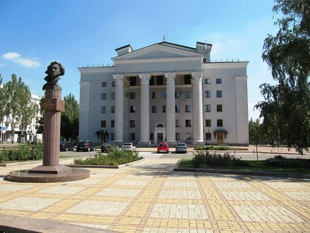
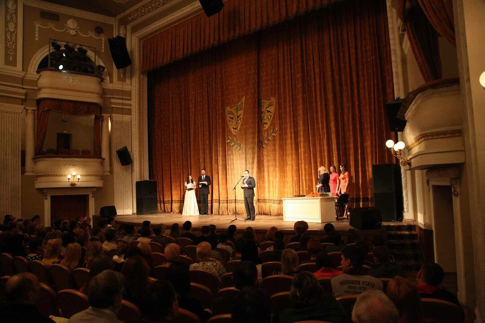

Театр Бровуна
Театр был открыт 15 октября 1927 года как Первый государственный театр (Донбасский государственный драматический театр) в городе Харькове. Инициатором создания театра был выдающийся украинский режиссер Николай Фореггер. В 1941 году театр был переведен в Донецк и получил название Донецкий областной музыкально-драматический театр. Первым спектаклем на донецкой сцене стала опера "Запорожец за Дунаем". В годы Великой Отечественной войны театр был эвакуирован в Центральную Азию. Здесь он продолжал свою деятельность, поддерживая моральный дух зрителей и бойцов. После возвращения в Донецк театр активно развивался, ставил спектакли на украинском и русском языках, сотрудничал с известными драматургами и композиторами. Он стал важным культурным центром Донбасса.

В 2001 году театру было присвоено имя выдающегося режиссера Марка Матвеевича Бровуна. А в период с 1990-х гг. до нашего времени театр переживал трудности, связанные с политическими и экономическими изменениями. Тем не менее, он продолжал работать, ставил новые спектакли, участвовал в фестивалях и гастролях. До 2014 года театр регулярно гастролировал по городам Украины, России, Беларуси и других стран. Последние гастроли Донецкого государственного академического музыкально-драматического театра имени М. М. Бровуна проходили со 2 по 10 ноября 2023 года в рамках Всероссийского гастрольно-концертного плана Минкультуры России.